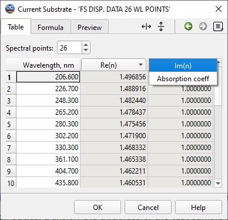
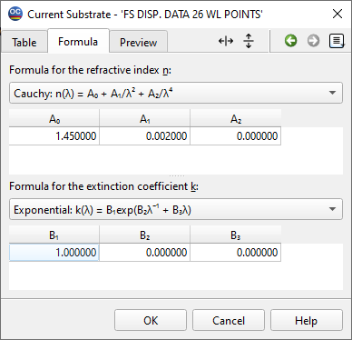
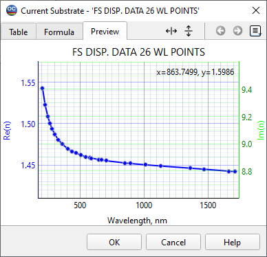
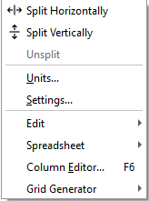

Substrate and Layer Material
The Layer Material and Substrate dialog windows are essential tools for creating and editing database files that describe the optical properties of Layer Materials and Substrates. The header of the dialog window indicates the specific material being edited. For instance, in the illustration below, the data file for the material “QUARTZ Disp. Data” in the Substrate database is shown.
An isotropic material is characterized by its complex refractive index, which consists of two components: the real part (Re(n)) and the imaginary part (Im(n)). The real part (Re(n)) represents the phase velocity of light in the material, while the imaginary part (Im(n)), often referred to as the extinction coefficient, accounts for the material’s absorption characteristics. This dual representation of the refractive index allows for a comprehensive understanding of how light interacts with the material, enabling accurate modeling and analysis in optical design applications.

To create a data file that sets the optical properties of a material in a table format (found under the Table tab of the window), you’ll start by specifying the number of spectral points for which you want to define the material’s refractive index in the Spectral points field. If you are dealing with non-dispersive materials, only one spectral point is necessary.
To input the refractive index value, select a cell in the Re(n) column and utilize standard editing options to enter your value. Similarly, for the extinction coefficient, select a cell in the Im(n) column to input the appropriate value.
For ease of editing, you can make use of the Spreadsheet Editing Tools , which are available through the Menu, Toolbar, or via keyboard shortcuts.
It’s also possible to specify the refractive index using the δ values, where δ is defined as δ = 1 - Re(n). This method is commonly used in extreme ultraviolet (EUV) and X-ray applications. To switch between these two conventions, utilize the specialized combo box located in the header of the Re(n) column, as illustrated in the example provided.
In the case of the Layer Material Editor, the extinction coefficient Im(n) can also be specified as the absorption coefficient. The definition is as follows:
Absorption coefficient = 4π Im(n) / λ

In the case of substrates, the imaginary part of the refractive index, Im(n), can be expressed in terms of Internal Transmittance or Optical Density. These settings can be selected using a specialized combo box, as shown in the figure below.
When specifying Im(n) in terms of Internal Transmittance or Optical Density, the thickness of the test sample is crucial. This thickness can be entered in the designated Thickness entry field.
Please, note that this value has completely local meaning for transformation between Internal Transmittance or Optical Density and Extinction coefficient in the Substrate editor. This value has no relation to the Substrate thickness in the Characterization Options dialog.
Another way to specify material properties is to use the Formula tab of the edit dialog windows.

It is possible to use different formulas to describe material properties. If a formula for the refractive index, Re(n), or the extinction coefficient, Im(n), is selected on the Formula page, the corresponding column on the Table page is grayed out and unavailable for editing.
Composite materials, which are mixtures of other materials available in the current database, can be utilized in your calculations. Within the Composition tab of the edit dialog windows, you have the ability to create these composite materials. The refractive index of a composite material can be calculated using one of the following methods:
Average Weighted Value of Dielectric Permittivities
Bruggeman’s Formula
Average Weighted Value of Refractive Indices
You can mix up to 5 different materials when creating a composite material. However, please note that only materials specified using the Table or Formula tabs can be included in a composite material. This ensures that the properties of the materials are defined accurately and maintain consistency within the composition calculations.
The Inhomogeneity tab of the Layer Material Editor allows you to specify the level of inhomogeneity for your materials. This parameter can be saved by OptiChar as a result of Layer Characterization using the linear inhomogeneity model. You also have the option to specify this value manually. It is important to note that the inhomogeneity level set in this manner applies uniformly across all layers that consist of this material, regardless of their thickness. This ensures consistent material properties throughout the layers during analysis and modeling.

The definition of the Inhomogeneity Level δ is:

where n2 and n1 are refractive indices at the top and bottom boundaries of the layer and is the averaged refractive index.
For a quick check of material parameters entered in the Layer Material and Substrate dialog windows, you can conveniently use the Preview tab of these windows.

Options button or right-click menu allows performing transformations between table, formula, and composite material presentations:

See also: